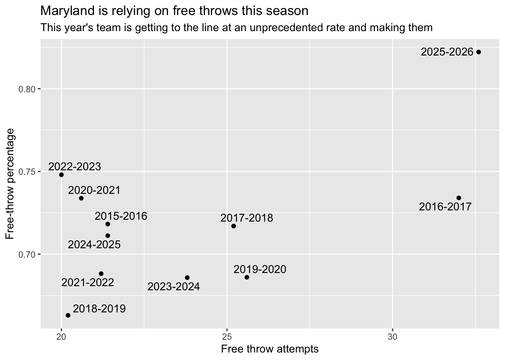
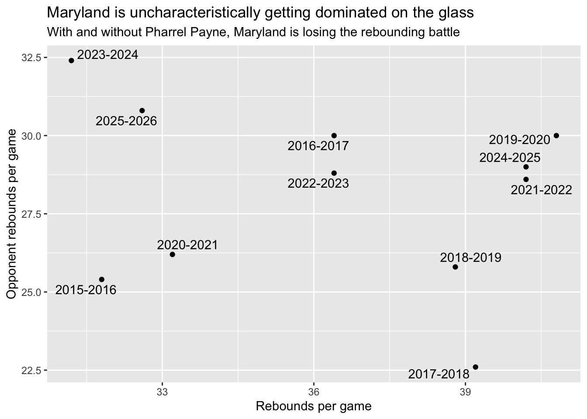
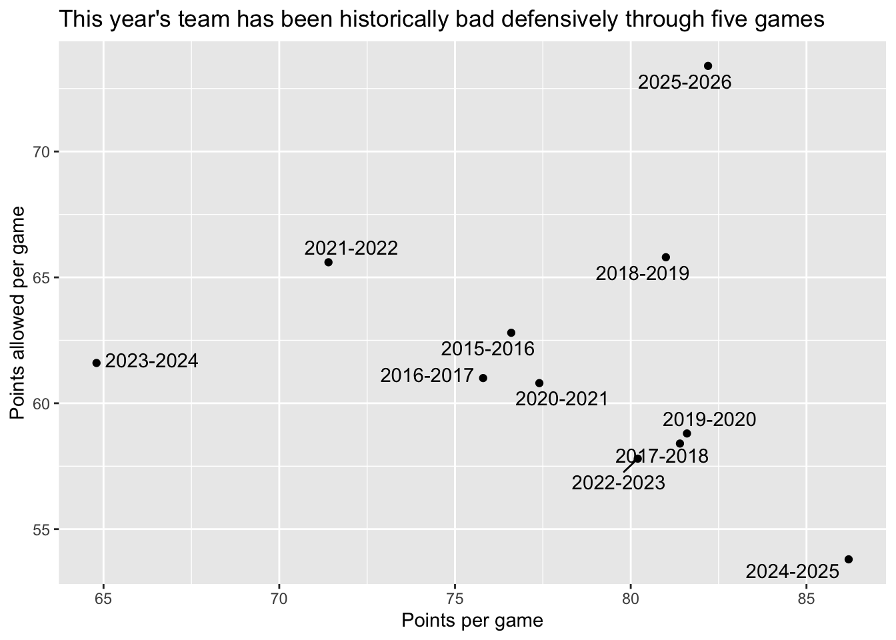
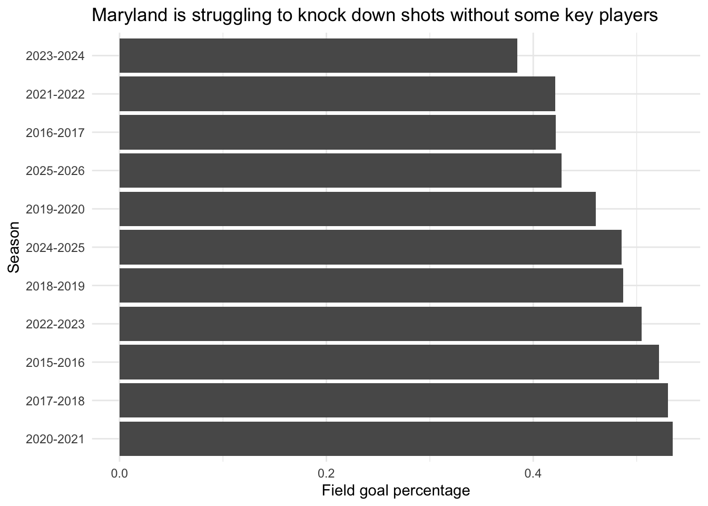
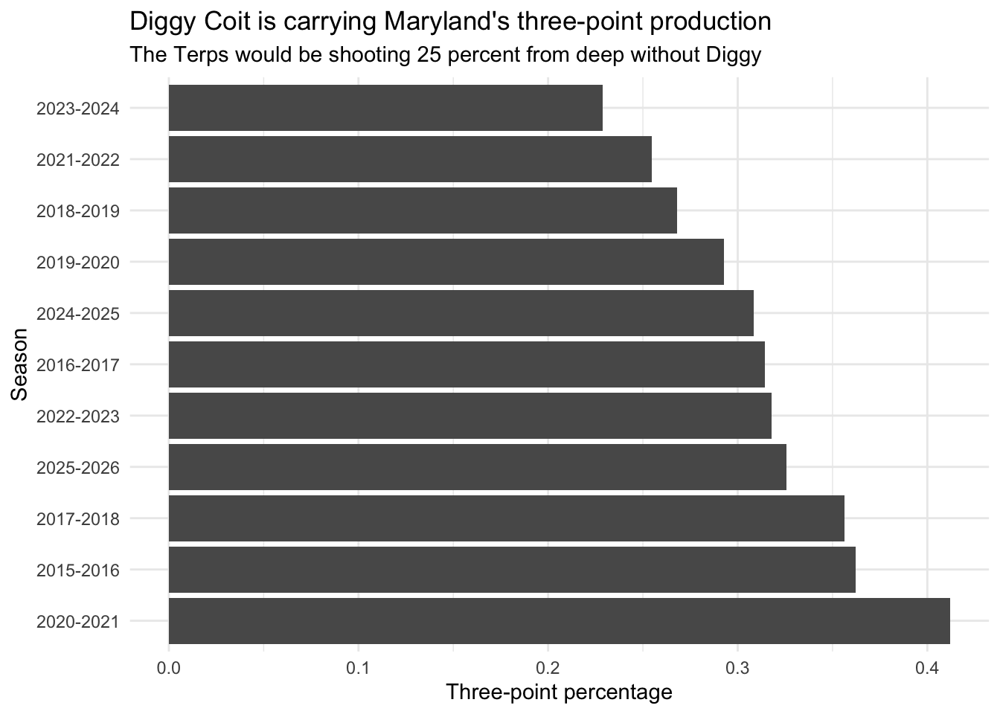

Maryland men’s basketball has struggled in its first five games under Buzz Williams
Author
Dylan Schmidt
library(tidyverse)
── Attaching core tidyverse packages ──────────────────────── tidyverse 2.0.0 ──
✔ dplyr 1.1.4 ✔ readr 2.1.5
✔ forcats 1.0.0 ✔ stringr 1.5.1
✔ ggplot2 3.5.1 ✔ tibble 3.2.1
✔ lubridate 1.9.4 ✔ tidyr 1.3.1
✔ purrr 1.0.2
── Conflicts ────────────────────────────────────────── tidyverse_conflicts() ──
✖ dplyr::filter() masks stats::filter()
✖ dplyr::lag() masks stats::lag()
ℹ Use the conflicted package (<http://conflicted.r-lib.org/>) to force all conflicts to become errors
library(ggrepel)
data <-read_csv("https://raw.githubusercontent.com/dwillis/dwillis.github.io/main/docs/sports-data-files/cbblogs1526.csv")
Warning: One or more parsing issues, call `problems()` on your data frame for details,
e.g.:
dat <- vroom(...)
problems(dat)
Rows: 122864 Columns: 59
── Column specification ────────────────────────────────────────────────────────
Delimiter: ","
chr (9): Season, TeamFullName, Opponent, HomeAway, W_L, OT, URL, Conferenc...
dbl (49): Game, TeamScore, OpponentScore, TeamFG, TeamFGA, TeamFGPCT, Team3...
date (1): Date
ℹ Use `spec()` to retrieve the full column specification for this data.
ℹ Specify the column types or set `show_col_types = FALSE` to quiet this message.
maryland_early_season_data <- data |>filter(Team =="Maryland"& Game <6)maryland_comparison <- maryland_early_season_data |>group_by(Season) |>summarise(rebounds_per_game =sum(TeamTotalRebounds)/5,opp_rebounds_per_game =sum(OpponentTotalRebounds)/5,team_free_throw_per_game =sum(TeamFTA)/5,team_free_throw_percent =sum(TeamFTPCT)/5,team_fg_percent =sum(TeamFGPCT)/5,team_three_point_percent =sum(Team3PPCT)/5,team_ppg =sum(TeamScore)/5,opp_ppg =sum(OpponentScore)/5, )
ggplot() +geom_point(data=maryland_comparison, aes(x=team_free_throw_per_game, y=team_free_throw_percent)) +labs(title="Maryland is relying on free throws this season", subtitle="This year's team is getting to the line at an unprecedented rate and making them",x="Free throw attempts", y="Free-throw percentage") +geom_text_repel(data=maryland_comparison, aes(x=team_free_throw_per_game, y=team_free_throw_percent, label=Season))

ggplot() +geom_point(data=maryland_comparison, aes(x=rebounds_per_game, y=opp_rebounds_per_game)) +labs(title="Maryland is uncharacteristically getting dominated on the glass", subtitle="With and without Pharrel Payne, Maryland is losing the rebounding battle",x="Rebounds per game", y="Opponent rebounds per game") +geom_text_repel(data=maryland_comparison, aes(x=rebounds_per_game, y=opp_rebounds_per_game, label=Season))

ggplot() +geom_point(data=maryland_comparison, aes(x=team_ppg, y=opp_ppg)) +labs(title="This year's team has been historically bad defensively through five games", x="Points per game", y="Points allowed per game") +geom_text_repel(data=maryland_comparison, aes(x=team_ppg, y=opp_ppg, label=Season))

ggplot() +geom_bar(data=maryland_comparison, aes(x=reorder(Season, -team_fg_percent),weight=team_fg_percent)) +labs(title="Maryland is struggling to knock down shots without some key players", x="Season", y="Field goal percentage") +theme_minimal() +coord_flip()

ggplot() +geom_bar(data=maryland_comparison, aes(x=reorder(Season, -team_three_point_percent),weight=team_three_point_percent)) +labs(title="Diggy Coit is carrying Maryland's three-point production", subtitle="The Terps would be shooting 25 percent from deep without Diggy",x="Season", y="Three-point percentage") +theme_minimal() +coord_flip()

If there’s anything we’ve learned from Buzz Williams’ previous stops (Marquette, Virginia Tech and Marquette), it’s that his teams typically get a steady diet of points at the free-throw line, feast on the offensive glass and play strong defense. But this season, only one of those traits has shown up.
While there was expected to be a bit of a grace period with Buzz Williams’ arrival in College Park and an entirely new team built in nearly a month, the first five games have been anything but pretty. The Terps barely beat a usually strong Marquette team, eked past Mount St. Mary’s in overtime, and needed second-half surges to beat Coppin State and Alcorn State. Maryland also looked extremely outmatched in its home-opener against Georgetown, arguably its worst performance of the season.
Injuries have certainly taken their toll on the team. Myles Rice has played in just one game, Pharrel Payne suffered what appeared to be a gruesome injury against Marquette (rumor is he is available to play in the Players Era Tournament), George Turkson missed a pair of games and Solomon Washington has yet to make his Terps’ debut.
But still, Maryland has struggled in two of the three areas that are usually staples with Buzz Williams.
Despite the Terps’ offensive struggles this season — Maryland is shooting just 25 percent from deep if you take away Diggy Coit’s numbers and just over 42 percent from the field — free throws have been their saving grace. Maryland has gotten to the line at an unprecedented rate (32.6 times per game and knocking down 82.2 percent), which has fueled its victories. Darius Adams is the leader of that group. While the true freshman hasn’t found his shot yet, he has gotten fouled seemingly every time he attacks the basket.
But Maryland has struggled significantly on the glass this season. Even with Pharrel Payne in the lineup, the Terps lack someone who can consistenly corral rebounds. It only got exponentially worse with Payne out of the lineup against Mount St. Mary’s. Maryland was outrebounded in that game and gave up 12 offensive rebounds. The Terps have recorded the third-fewest rebounds per game over the last 11 seasons and only trail the 2023-24 team in opponents rebounds — not a good section of the scatterplot to be in. Maryland also hasn’t gotten enough second-chance opportunities to make up for its poor offense.
The most concerning thing has been the Terps’ defense through five games. Maryland has allowed 73.4 points per game this season — significantly more than any of its teams throughout the last 11 seasons. The Terps have allowed opponents to get to the rim at ease this season, which is why Buzz Williams made an adjustment heading into their game against Mount St. Mary’s. Unfortunately, the Mountaineers couldn’t miss from deep. Mount St. Mary’s scored 90 points in the overtime loss.
While its a short sample size, Maryland fans should feel a bit concerned heading into the Players Era Tournament.